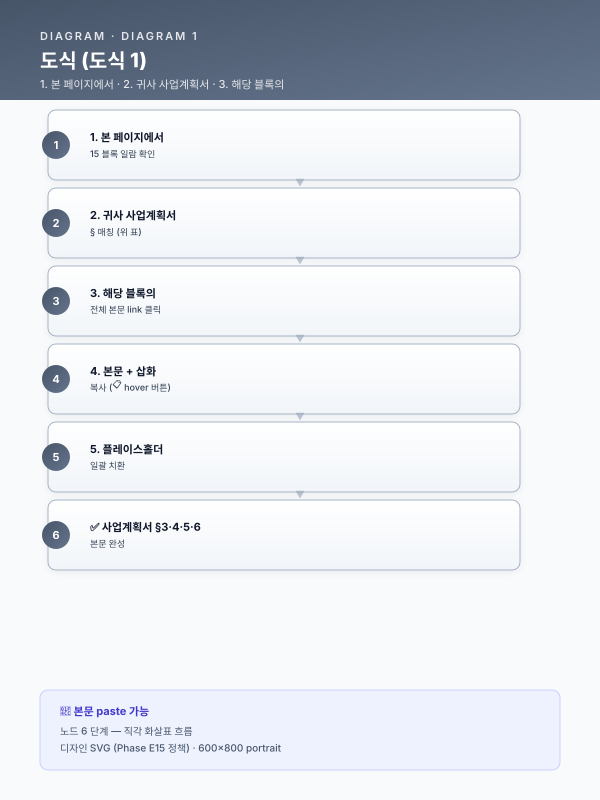

📋 공통 블록 모음 — Paste-Ready 15 블록¤
📖 약 4 분 읽기
이 페이지를 어떻게 쓰는가?
- 아래 표에서 귀사 사업계획서 § 위치 에 맞는 블록을 찾는다 (예: §3.1 사업 배경 → BLK-T1-3.1).
- 해당 블록의 "전체 본문" 링크 클릭 → 본문 복사 (📋 버튼 또는 hover 후 우측 Copy 버튼).
- 귀사 사업계획서에 paste 후
[고객사]·[공정]·[수치]·[기간]·[%]플레이스홀더 일괄 치환. - 끝. 별도 작성 불요.
어디에 paste 하나? — 15 블록 한눈에¤
| 사업계획서 § | 블록 ID | 트랙 | 핵심 내용 | 길이 | 전체 본문 |
|---|---|---|---|---|---|
| §3.1 사업 배경 | BLK-T1-3.1 | Track 1 — 제조 AI | 공정 운영의 인적 의존·암묵지 리스크 | 3 단락 + Mermaid | → 본문 |
| §3.1 사업 배경 | BLK-T3-3.1 | Track 3 — LLM·RAG | 문서 포맷 이질성·검색 불가 상태 | 3 단락 + Mermaid | → 본문 |
| §3.2 사업 배경 | BLK-T1-3.2 | Track 1 — 제조 AI | 데이터 단절·비정형/이미지 관리 한계 | 3 단락 + Mermaid | → 본문 |
| §3.2 사업 배경 | BLK-T2-3.2 | Track 2 — MLOps | 모니터링 부재로 인한 후행적 모델 운영 | 3 단락 + Mermaid | → 본문 |
| §3.2 사업 배경 | BLK-T3-3.2 | Track 3 — LLM·RAG | 숙련자 암묵지 의존·지식 이전 실패 | 3 단락 + Mermaid | → 본문 |
| §4.2 기술 설계 | BLK-T2-4.2 | Track 2 — MLOps | MLOps 핵심 7 종 구성요소 모듈 인벤토리 | 3 단락 + Mermaid | → 본문 |
| §4.2 기술 설계 | BLK-T3-4.2 | Track 3 — LLM·RAG | RAG 기준 아키텍처 — 5 계층 | 3 단락 + Mermaid | → 본문 |
| §4.4 기술 설계 | BLK-T1-4.4 | Track 1 — 제조 AI | 피쳐 엔지니어링 접근 | 3 단락 + Mermaid | → 본문 |
| §4.4 기술 설계 | BLK-T2-4.4 | Track 2 — MLOps | 엣지·온프레미스·클라우드 3 단 참조 아키텍처 | 3 단락 + Mermaid | → 본문 |
| §4.5 기술 설계 | BLK-T1-4.5 | Track 1 — 제조 AI | 모델·알고리즘 선정 기준·앙상블 구성 | 3 단락 + Mermaid | → 본문 |
| §4.6 기술 설계 | BLK-T1-4.6 | Track 1 — 제조 AI | 데이터 → 피쳐 → 모델링 → 현장 적용 전체 파이프라인 | 3 단락 + Mermaid | → 본문 |
| §5.2 운영 | BLK-T3-5.2 | Track 3 — LLM·RAG | 청킹 전략 — 계층·섹션·토픽·멀티뷰 | 3 단락 + Mermaid | → 본문 |
| §5.5 운영 | BLK-T2-5.5 | Track 2 — MLOps | 인프라·데이터·성능 3 층 모니터링·드리프트 탐지 | 3 단락 + Mermaid | → 본문 |
| §5.5 운영 | BLK-T3-5.5 | Track 3 — LLM·RAG | LLM 응답 생성 — 환각 방지·근거 인용·거부 정책 | 3 단락 + Mermaid | → 본문 |
| §6.1 운영 | BLK-T2-6.1 | Track 2 — MLOps | 개선 포인트 선정 노하우 — 어디를 왜 먼저 고칠까 | 3 단락 + Mermaid | → 본문 |
추가 블록 영역 (Top5 외)¤
위 15 블록은 Track 1·2·3 의 핵심 5 블록 ×3 입니다. 추가로 활용 가능한 블록 영역:
5.2 AI 엔진 변형 카드 (6 종 — Track 1 §5.2 시나리오별 교체 블록)¤
| 카드 | 적용 시나리오 | 핵심 |
|---|---|---|
| 5.2-a | 시계열 회귀·앙상블 | LSTM/Transformer + XGBoost 앙상블 |
| 5.2-b | 압연 두께 예측 (시계열) | LSTM·BiLSTM + 시간창 윈도우 |
| 5.2-c | 비전 결함 검출 (CNN) | EfficientNet·ResNet + 데이터 증강 |
| 5.2-d | 이상탐지·예지보전 | Autoencoder + Isolation Forest 앙상블 |
| 5.2-e | 공정 최적화·자동 보정 | 강화학습 (PPO·SAC) + HITL 피드백 |
| 5.2-f | LLM·RAG | sLM (Polyglot-Ko·HyperCLOVA-X) + RAG 5 계층 |
6 패키지 통합 파일럿 (사업 패턴별 30~50 블록)¤
각 패키지의 §3 시나리오 본문 (5 조항: 현장문제·개선·구현·기술개발·DX 추진) 도 paste-ready:
- 패키지 1 — 대기업 철강 다년 R&D (9 시나리오 × 5 조항 = 45 블록)
- 패키지 2 — 중견 냉연 (6 시나리오 × 5 조항 = 30 블록)
- 패키지 3 — 특수강관 RAG (4 시나리오 × 5 조항 = 20 블록)
- 패키지 4 — 고무 양산
- 패키지 5 — 정밀가공 SaaS
- 패키지 6 — 유틸·ESG
Cross-cutting 모듈 (5 종 — 영역별 결합 블록)¤
| 모듈 | 결합 영역 | paste 위치 |
|---|---|---|
| CBAM 대응 | EU 수출·탄소국경조정 | §3 ESG·§7 성과 |
| 중대재해 안전 | 안전보건관리체계 | §1.2 추진 배경 |
| 연합학습 | 산업단지 공동 | §3.4 성과공유 |
| OEM 공급망 정합 | 자동차·조선·2차전지 | §1.1 외부 환경 |
| SaaS 보안 | 클라우드 데이터 거버넌스 | §3.5 보안과제 여부 |
플레이스홀더 일괄 치환 가이드¤
paste 한 본문에서 다음 플레이스홀더를 귀사 정보로 일괄 치환:
| 플레이스홀더 | 의미 | 치환 예시 |
|---|---|---|
[고객사] |
귀사명 | "동국제강(주)" |
[공정] |
대상 공정명 | "후판 압연·소둔" |
[수치] |
정량 데이터 | "87%" "5,000" "12.5%" |
[기간] |
시점·기간 | "12개월" "2026.04~2026.12" |
[%] |
비율 | "30%" |
[LLM모델] |
LLM 모델명 | "Polyglot-Ko-12.8B" |
[벡터스토어] |
벡터 DB | "FAISS" "Milvus" |
[임계] |
임계값 | "PSI 0.25" |
플레이스홀더는 본 사이트의 모든 페이지에서 점선 박스 + 앰버 배경 으로 시각 강조됩니다.
5 단계 사업계획서 작성 워크플로¤

¤더 많은 블록이 필요하신가요?
- 6 패키지 통합 파일럿 (패키지 비교 →) — 사업 패턴별 30~50 블록
- 11 운영 가이드 — 조립·재무·KPI·외부검증·RAG·도메인지식 등 운영 본문
- 5 시나리오 상세 — STL·RUB·MET·UTL·SAF·LLM 도메인별 상세 시나리오 본문